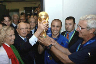

Футбол
Футбол - командный вид спорта, в котором целью является забить мяч в ворота соперника ногами или другими частями тела (кроме рук) большее количество , чем команда соперника. История возникновения и развития футбола (кратко) Точной даты возникновения футбола не известно, но можно с уверенностью сказать, что история футбола насчитывает не одно столетие и затронула немало стран. Игры с мячом были популярны на всех континентах, об этом говорят повсеместные находки археологов. В Древнем Китае существовала игра, известная как «Цуцзюй», упоминания о которой были датированы вторым веком до нашей эры. По заявлению ФИФА в 2004 году, именно она считается наиболее древней из предшественников современного футбола.
Есть 17 официальных правил игры, каждое из которых содержит список оговорок и руководящий принципов. Эти правила предназначены для применения на всех уровнях футбола, хотя есть некоторые изменения для таких групп, как юниоры, взрослые, женщины и люди с ограниченными физическами возможностями. Законы очень часто формулировались в общих чертах, которые позволяют упростить их применения в зависимости от характера игры. Первые правила игры в футбол были введены 7 декабря 1863 года Футбольной ассоциацией Англии. Сегодня правила футбола устанавливает Международный совет футбольных ассоциаций (IFAB), в который входят ФИФА (4 голоса), а также представители английской, шотландской, североирландской и валлийской футбольных ассоциаций. Последняя редакция официальных футбольных правил датирована 1 июня 2013 года